29 ideas, each with one picture: 7 races where you drive against a friend, 22 more
ideas for every topic, and 4 new rides for Poke Pals. On 26 October you picked the roller coaster and twelve ideas: they are
now nine new games in the plan (your four races are one game, Kart Cup), each with a storyboard. The rest stay here for later.
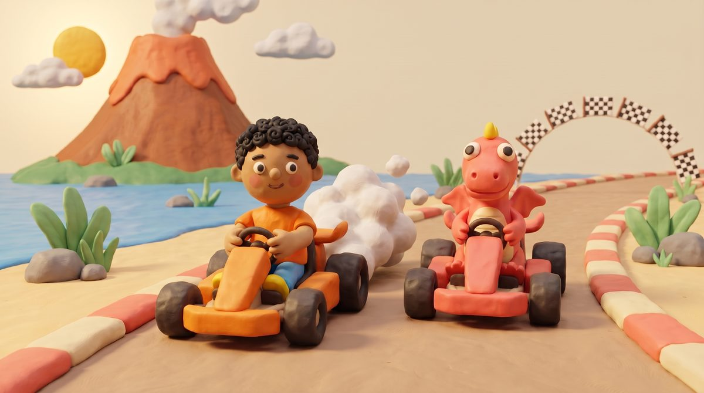
Kart Cup: you race Fizz round the bay, and every right answer is a boost.
Your picks, now in the plan
The roller coaster for Poke Pals, and nine new games next to the eight that stay: 17 games for ages 3 to 7 (from Grade 3 the lessons are
practice screens). Sea Wall, Sandcastle Twins, Garden Beds and Fishing Jetty are gone; their lessons moved into the
new games: shapes to Mirror Wings, fractions to Chocolate Snap, weights to Boat Load, lengths to Kart Cup's ramp jump.
Poke Pals: a new ride instead of the double-decker
The Peeps still need ten seats as two fives (that is what makes "5 and 3 is 8" easy to see), but the seats no longer sit inside a
boxy wagon. You chose the roller coaster: when it is full, it rides the loop.
Two cars of five seats: the first car fills, then the second, so 6 is "5 and 1". When all ten are in, it rides the loop!
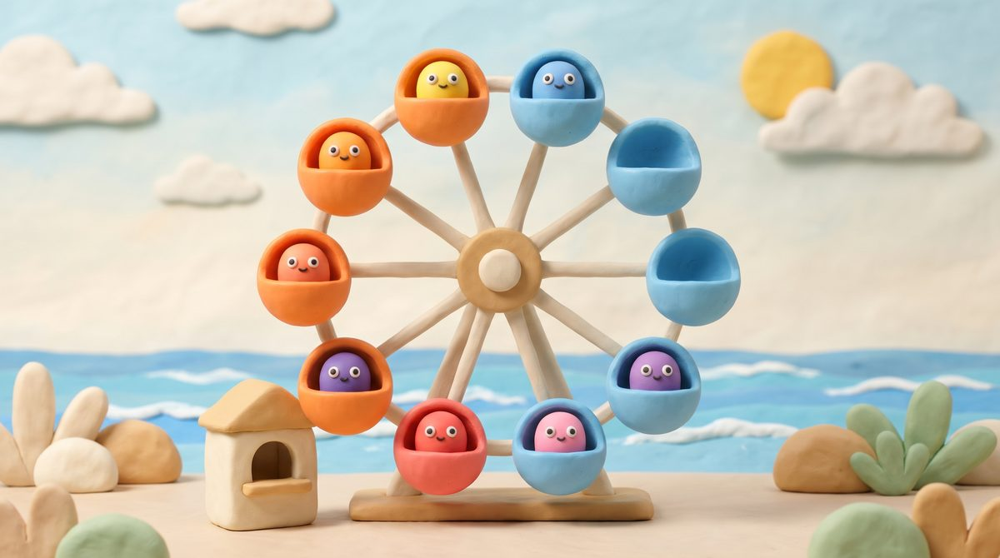
Big wheel
Ten gondolas, five orange and five blue. When every one has a Peep in it, the wheel turns.
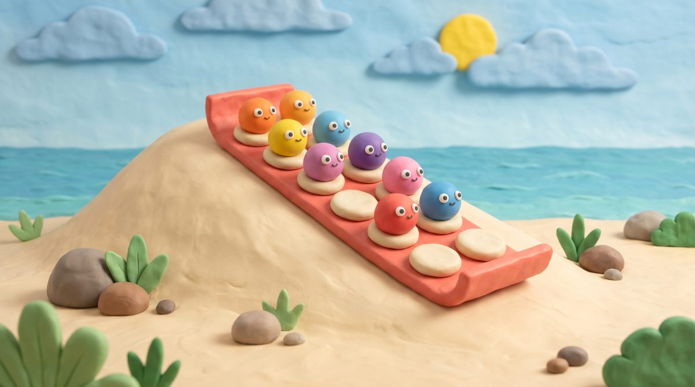
Dune sledge
Two rows of five cushions on a big sledge. When it is full: whoosh, down the dune and into the sea.
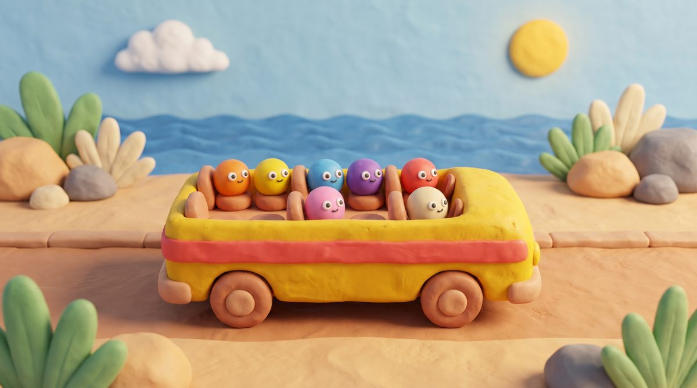
Beach bus
An open-top bus with one deck and two rows of five seats. When it is full, it drives off along the promenade.
Races: you against a friend
You drive one kart, a friend drives the other, and the maths drives your kart: a right answer is a boost, the right road,
a quicker pit stop or a higher gear.
A close race, every time
The friend drives at the speed of your own best, so races are always close. Beat it, and
next time the friend is a little quicker. Really, you are racing yourself.
Kind when you lose
The friend says "So close! Again tomorrow?", never "you lost". A miss shows the answer and the
kart keeps going.
By age
At 5: the pit stop, no clock. At 6 and 7: quick races, 10 answers. From Grade 3 the boost race stays as the
quick facts warm-up, taking turns with Volcano Pop.
One game, many lessons
Your four races are one game, Kart Cup: the same karts and track, and each lesson
picks its race: boosts for facts, pit stops for making 10, the hill for counting in steps, ramps for measuring.
The road splits into two or three roads, each with a sign. Steer into the road with the right answer; the others are bumpy detours that cost a little time, never the race.
The maths
Which is more (4-5), 10 more (6), 6 × 7 (8), the nearest hundred (8), the bigger fraction or decimal (9-10).
Quick
Every fork is one tap: a fast, steady stream of questions.
Fun
The detours are silly (a puddle, a field of bouncing Peeps), so a miss is funny, not sad.
Halfway round, the kart pulls in and the twins fix it, fast: the fuel gauge shows 6, so add 4 to make 10; three karts need four wheels each; fill the tank to three quarters.
The maths
Make 10 and 20 (5-6), equal groups (7-8), fractions of a tank and litres (8-9).
Quick
The quicker the pit stop, the further ahead your kart goes back into the race.
Fun
The twins work like a real pit crew, with a big "GO!"
The road zig-zags up the volcano with a flag at every bend. Say the next number to change up a gear: 6, 12, 18… A miss rolls you back one bend. The hill scrolls past in layers as you climb.
The maths
Count in 2s, 5s and 10s (5-6), in 3s and 4s (7), every times table (8-9), steps of 25, 0.1 or a fraction (10).
Quick
Race Noodle to the crater: one number per bend, as fast as you can.
Fun
At the top the volcano puffs a big pink cloud and both karts whizz down the other side.
Choose how high the ramp is and the kart flies off it, landing beside a tape measure. Guess where it will land, then read the tape. Bim and Bam take turns: who landed nearer the flag?
The maths
Whole metres (6), metres and centimetres, guess then measure (7), how much further (8), halves and quarters of a metre (9), all the jumps on a line plot (9-10).
Quick
The kart has landed: type how far, or how much further than Bim.
Fun
Higher ramps, longer flights, and a big splash if you fly into the sea.
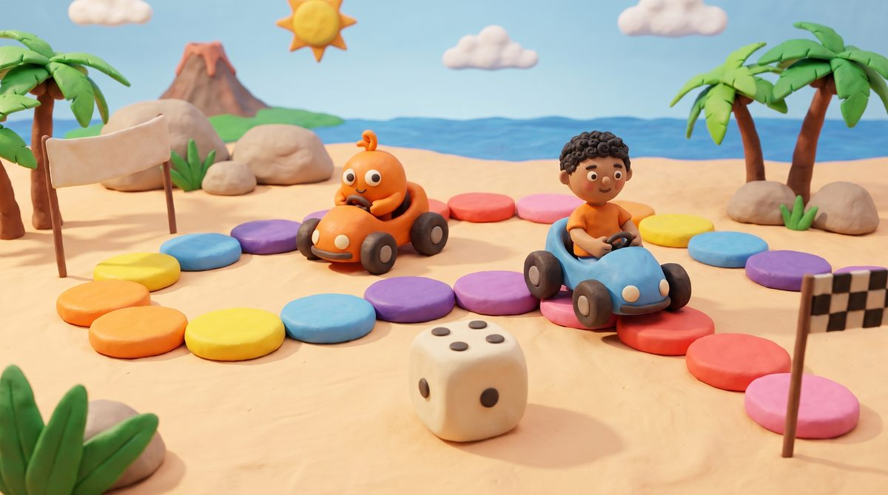
Peep Dash
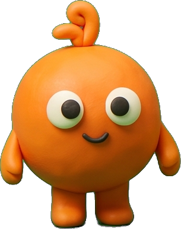
with Pom · ages 3 to 5
345678910
Counting & NumbersAdding & Taking Away
A board-game race for the youngest: tap the big clay dice, count its dots, and your kart hops that many stones. Pom rolls too.
The maths
Count dots to 6 (3-4), count on from where you are (5), two dice to add (5).
Quick
No clock: it is a calm race, and the dice decides who wins.
Fun
Pom cheers for both karts, and every stone squeaks as you hop.
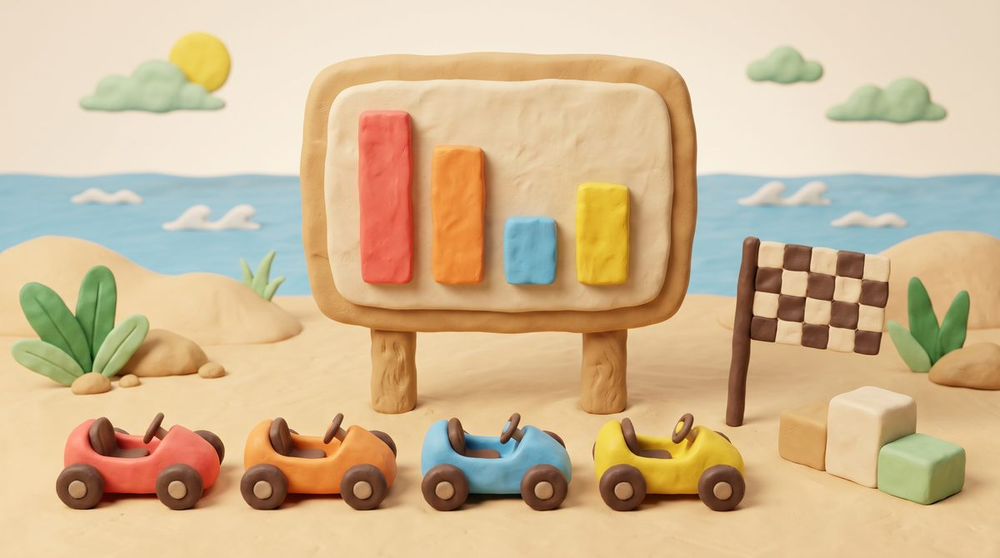
Lap Board
with Fizz · ages 6 to 7
345678910
Patterns & GraphsTime
After a race the lap times go up on the results board as bars. Who was quickest? How much quicker? Which lap was the slowest?
The maths
Picture graphs (6), bar graphs (7-8), seconds and minutes (8), scales and line plots (9-10).
Quick
Read the board: one tap or one number.
Fun
It is your own race on the board, so the graph means something.
More ideas, for every topic
Every idea serves several ages and lessons, as the games do. Choose a topic to see only its ideas. Where a card's maths goes
past age 7, the same clay picture can be the model on a practice screen.
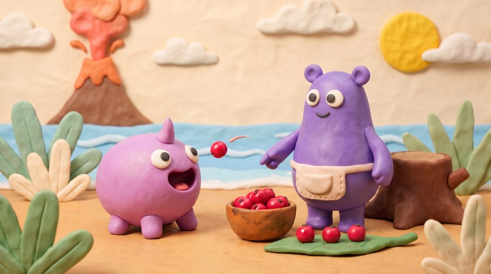
Critter Snacks
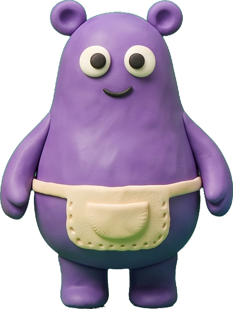
with Mumba · ages 3 to 7
345678910
Counting & NumbersAdding & Taking Away
A critter from the Critter Garden is hungry: "5 berries, please!" Drop them in one at a time while Mumba counts. One too many and it burps it back.
The maths
Count out to 10 (3-4), one more and one less (4-5), add and take away: it ate 3, how many are left? (5-7)
Quick
Some berries are gone: type how many are left on the plate.
Fun
Fed critters grow a little bigger in the Critter Garden.
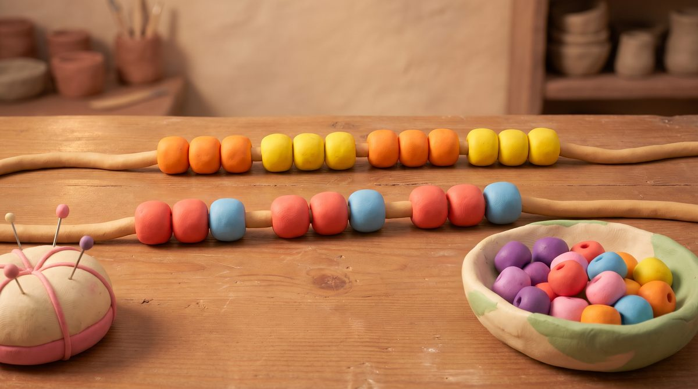
Bead Necklace
with Mumba · ages 3 to 7
345678910
Counting & NumbersPlace Value
Thread clay beads on a string: copy a pattern, then make a necklace of exactly 20, in fives and tens.
The maths
Patterns (3-4), count to 20 (4-5), count in 2s, 5s and 10s to 100 (5-6), tens and ones (6-7).
Quick
A necklace slides past: how many beads?
Fun
A friend wears each necklace for the rest of the day.
Digsy's van delivers parcels along the promenade. Drive to number 46: past four tens of houses, then six more.
The maths
Numbers to 20 (5), to 100 (6), odd and even sides of the street (7), hundreds (7-8), the nearest ten (8-9).
Quick
The van stops: type the house number.
Fun
Every house opens its parcel, and there is a surprise inside.
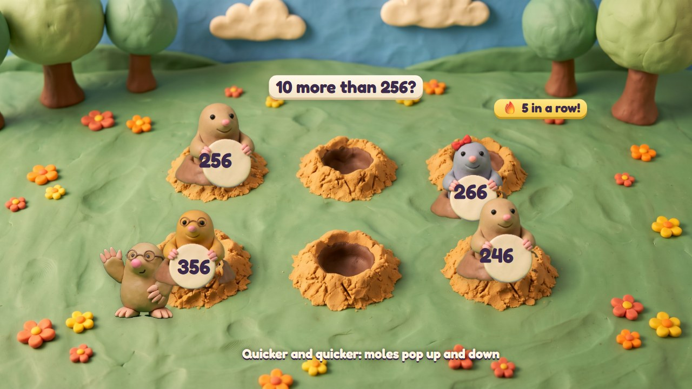
Mole Holes
with Digsy · ages 5 to 10
345678910
Place ValueAdding & Taking AwayTimes & Sharing
Digsy's cousins pop out of holes holding numbers. Boop the one Digsy asks for: five tens, the biggest, 10 more than 256. (One of Digsy's three ideas, drawn earlier.)
The maths
Any lesson with one right answer among a few: place value (6-8), facts (6-10), comparing (5-9).
Quick
Made for speed: the moles pop up and down faster and faster.
Fun
The booped mole does a little dance; at the end they line up, smallest to biggest.
As the lift rides down, the picture moves in layers at different speeds: the shaft's rails rush past, the rooms pass more slowly, and the rock
with its gems and fossils far behind slides past slowest of all. It feels deep, and the floor numbers fly by.
The bread, pizzas, buns and pie are drawn again, sitting flat on the oven's turntable. Baking Time can also take more lessons:
trays of buns in rows (times), pizza toppings in halves and quarters (fractions), weighing the flour (measuring).
The ideas not picked (Fork Road Rally, Peep Dash, Lap Board, Cookie Cutters, Lighthouse Beam, Peep Poll…): keep them for later, or drop them?
Could some of them become Play Park games, just for fun with no maths?
Number Lift as a parallax ride down, and the flat bakes in Baking Time: right now?
0 ideas picked
Each idea is one picture to show the idea; numbers in the pictures may change. Your picks stay in this browser only: press
"Copy my picks" and send them.
 Kart Cup
Kart Cup Peep Parachutes
Peep Parachutes Island Hopper
Island Hopper Marble Run
Marble Run Raft Rescue
Raft Rescue Parcel Post
Parcel Post Mirror Wings
Mirror Wings Poke Pals on the roller coaster
Poke Pals on the roller coaster